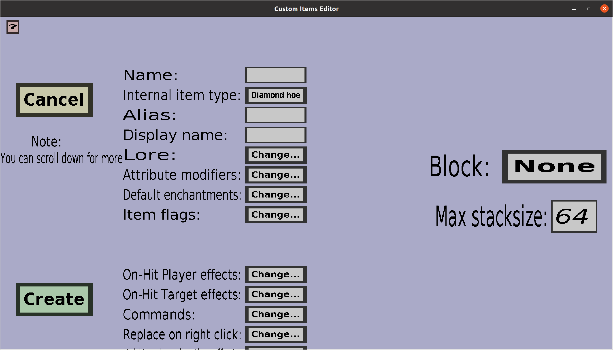

The block edit menu can be used to create or modify block items. These are items that will place a custom block when a player right-clicks them against a block. Note: you need to create a custom block before you can create a block item. If you just started creating a new block item, it should look like this:
The only properties unique to block items are the Block and the Max stacksize. All other properties on this menu are explained here. Note that, unlike most other custom items, it is not possible to choose a custom texture or model. This is because the block item will automatically take on the texture and model of its block.